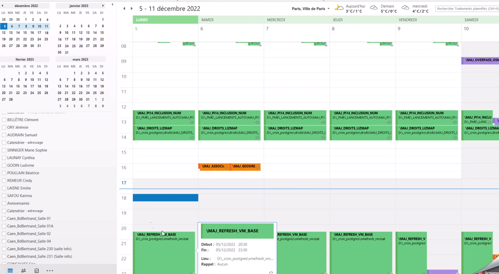
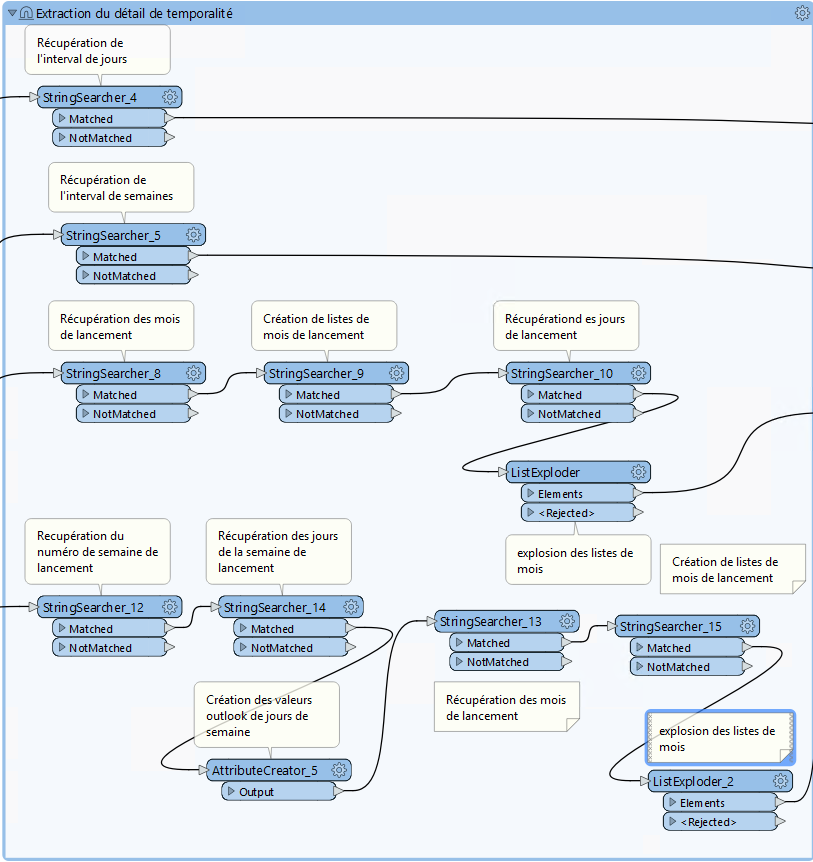

I- Produire un calendrier des tâches du plannificateur
Dans le cadre de ses missions, le pôle SIG du Département enrichit la base de données épaisse, effectue des mises à jour automatiques (interconnexion aux API via l’ETL FME) et des traitements spécifiques sur la base de données.
Pour cela, des tâches sont programmées via le logiciel ‘Task scheduler’ de windows.
Avec la multiplication des tâches plannifiées, un traitement FME a été mis en place pour automatiser la création d’un calendrier partagé des tâches windows dans Outlook.
{kind=link}
1 - Normes de saisies sur le plannificateur Windows
Afin que l’ensemble des paramètres soient correctement interprété par FME, certaines normes doivent êtres respectées lors de la création/saisie d’une tâche sur windows.
1.1 - Onglet description
Saisie de la CATEGORIE dans le format suivant :
CATEGORIE : (Interne ou Entrant ou Sortant).
NE PAS OUBLIER LE POINT A LA FIN !!
Saisie de la SOURCE des données dans le format suivant :
SOURCE : (lien ou nom de la/des source(s)) |*
NE PAS OUBLIER LE |* A LA FIN !!
Saisie de la DESTINATION des données dans le format suivant :
DESTINATION : (lien ou nom de la/des source(s)) |*
NE PAS OUBLIER LE |* A LA FIN !!
Saisie du RESUME de la tâche dans le format suivant :
RESUME : description de la tâche
LE RESUME ET SON CONTENU DOIT TOUJOURS TERMINER LA DESCRIPTION !!

1.2 - Onglet déclencheur
La date de démarrage doit toujour commencer le même jour que celui programmé (ex : si programmé les lundi, démarrage un lundi ou si programmé le premier vendredi du mois, démarrage un premier vendredi)
{kind=link}
On ne définit pas d’arrêt de la tâche à cette étape (on se sert de l’exécution limite à une autre étape, cela risque de concurencer)
{kind=link}
1.1 - Onglet Paramètres
Programmer l’arrêt de la tâche en fonction de sa durée réelle (c’est cette limite qui va définir la durée de la tâche : en heures ou en minutes)

2 - Fonctionnement du workbbench FME
Le workbench FME se trouve ici
2.1 - Charger les fichiers XML task schduler
A chaque création d’une tâche sur le logiciel ‘Task scheduler’ de Windows, un fichier xml est enregistré sur C:WindowsSystem32Tasks*
FME récupère l’ensemble des fichiers XML se trouvant dans ce dossier.
2.2 - Extraction des données de temporalités (REGEXP)

Récupération du texte entre les balises URI (nom de la tâche)
(?<=<URI>)(.*)(?=<\/URI>)
Exclure les tâches qui commencent par “User_Feed_” (tâches par défaut de windows)
Récupération du texte entre les balises command (actions effectuées par la tâche) sous forme de listes
(?<=<Command>)(.*?)(?=<\/Command>)
Concaténation des listes d’actions
Récupération du texte entre les balises Description (Description de la tâche) sous forme de listes
(?<=<Description>)(.*)(?=<\/Description>)
remplacer les sauts de lignes des description par des balises n puis saut de ligne (interprétables par Outlook)
Récupération de la valeur entre les balises StarBoundary (heure et date de démarrage de la tâche)
(?<=StartBoundary>)(.*?)(?=<\/StartBoundary)
Supprimer les : et - de la date de démarrage (interprétables par Outlook)
Récupération de la valeur après balises SheduleBy (programmation par interval : mois, jours, années)
(?<=ScheduleBy)(\w*)(?=>)
Récupération de la valeur après ExecutionTimeLimit (limite de temps avant interuption de la tâche)
(?<=ExecutionTimeLimit>)(\w*)
Récupération de la valeur comprise entre CATEGORIE et . (catégorie de donénes entrantes, sortantes ou flux internes)
(?<=CATEGORIE :)(.*?)(?=\.)
Supression des espaces dans le champs catégorie
2.3 - Création des champs pour le listing excel

Récupération des valeurs entre DESTINATION et |* (url ou nom de la destination des données)
(?<=DESTINATION :)(.*?)(?=\|\*)
Créer une valeur vide pour les entités qui n’ont pas de destination renseignée
Récupération des valeurs entre DSOURCE et |* (url ou nom de la source des données)
(?<=SOURCE :)(.*?)(?=\|\*)
Créer une valeur vide pour les entités qui n’ont pas de source renseignée
Récupération des valeurs après RESUME et avant la balise /DESCRIPTION (résumé de la tâche)
(?<=RESUME :)(.*?)(?=<\/Description>)
Créer une valeur vide pour les entités qui n’ont pas de résumé renseigné
2.4 - Filtre sur les temporalités
{kind=link}
2.5 - Extraction du détail de temporalité
{kind=link}
Pour les temporalité Day :
Récupération des chiffres après la balise DaysInterval (interval de jours pour lancement de la tâche)
(?<=<DaysInterval>)(\d*)
Pour les temporalité Week :
Récupération des chifres Entre les balises WeeksInterval (interval de semaines pour lancement de la tâche)
(?<=<WeeksInterval>)(.*)(?=<\/WeeksInterval>)
Pour les temporalité Month :
Récupération du texte Entre les balises Months (différents mois de lancement de la tâche)
(?<=<Months>)(.*)(?=<\/Months)
Création de liste avec les textes de mois extraits
(?<=<)(.*?\/>)
Récupération du chiffre après la balise Day (jour des mois de lancement de la tâche)
(?<=<Day>)(\d*)
Explosion des listes de mois
Pour les temporalité MonthDayOfWeek :
Récupération des chiffres après la balise Week (numéro de semaine de lancement)
(?<=<Week>)(\d*)
Récupération du texte entre les balises DaysofWeek (jours de la semaine pour lancement de la tâche)
(?<=<DaysofWeek>)(.*)(?=<\/DaysofWeek)
Création des valeurs outlook de jours de semaines en fonction des chiffres extraits (nombres et Prefixes)
Récupération du texte Entre les balises Months (différents mois de lancement de la tâche)
(?<=<Months>)(.*)(?=<\/Months)
Création de liste avec les textes de mois extraits
(?<=<)(.*?\/>)
Explosion des listes de mois
2.6 - Mise en forme du détail de temporalité

Création du numéro de mois correspondant à la valeur de mois extraite
Préfixer les attributs Days et Month en fonction de leur longueur et mise en forme de la date pour Outlook
2.7 - Structuration du texte au format ICS
{kind=link}
Pour les temporalité Day :
BEGIN:VEVENT CATEGORIES:Journalier SUMMARY: @Value(task_name) DTSTART;TZID=”Romance Standard Time”:@Value(start_time) RRULE:FREQ=DAILY;INTERVAL=@Value(day_interval) DURATION:@Value(duration) DESCRIPTION:
@Value(description)
LOCATION:@Value(task_actions) END:VEVENT
Pour les temporalité Week :
BEGIN:VEVENT CATEGORIES:Hebdomadaire SUMMARY: @Value(task_name) DTSTART;TZID=”Romance Standard Time”:@Value(start_time) RRULE:FREQ=WEEKLY;INTERVAL=@Value(week_interval) DURATION:@Value(duration) DESCRIPTION:
@Value(description)
LOCATION:@Value(task_actions) END:VEVENT
Pour les temporalité Month :
BEGIN:VEVENT CATEGORIES:Mensuel SUMMARY:@Value(task_name) DTSTART;TZID=”Romance Standard Time”:@Value(start_time2) RRULE:FREQ=YEARLY;BYMONTHDAY=@Value(num_day);BYMONTH=@Value(num_month2) DURATION:@Value(duration) DESCRIPTION:
@Value(description)
LOCATION:@Value(task_actions) END:VEVENT
Pour les temporalité MonthDayOfWeek :
BEGIN:VEVENT CATEGORIES:Mensuel SUMMARY:@Value(task_name) DTSTART;TZID=”Romance Standard Time”:@Value(start_time2) RRULE:FREQ=YEARLY;BYDAY=@Value(num_day2);BYMONTH=@Value(num_month2);BYSETPOS=@Value(week) DURATION:@Value(duration) DESCRIPTION:
@Value(description)
LOCATION:@Value(task_actions) END:VEVENT
2.8 - Ecriture du fichier ics
{kind=link}
Dans les paramètres d’attribut du writer, modifier la valeur :
BEGIN:VCALENDAR VERSION:2.0 @Value(text_line_data) END:VCALENDAR
Et enregistrer en destination Text file avec suffixe .ics dans le nom.

2.9 - Mise en forme Excel
{kind=link}
Création de la périodicité et de l’interval
Pour les temporalité Day :
periodicite : journalier interval : Tous les @Value(day_interval) jours
Pour les temporalité Week :
periodicite : hebdomadaire interval : Toutes les @Value(week_interval) semaines
Pour les temporalité Month :
periodicite : mensuel interval : Le @Value(num_day) des mois de : @Value(months)
Pour les temporalité MonthDayOfWeek :
periodicite : mesnuel interval : Le @Value(num_day) de la @Value(week) eme semaine des mois de : @Value(months)
3 - Ouverture des fichiers
Dans outlook, importer le calendrier à partir du fichier ICS créé.

En cliquant sur un rendez-vous, vous pouvez consulter :
La périodicité des traitements (si paramétrage des catégories dans Outlook : plus bas dans le mail)
Le nom de la tâche (objet)
L’emplacement de l’action effectuée (emplacement)
L’heure de début
L’heure de fin (limite d’exécution du traitement)
Dans le corps du RDV : - La catégorie d’import/export données : données entrantes, sortantes ou partagées/transférées en interne - Le chemin/url sources des données - Le chemin/url destination des données - Une description du traitement
Vous pouvez définir les catégories dans outlook comme ci-dessous pour visualiser la périodicité des traitements en couleur et les modalités d’imports/export de données (entrants, sortants, interne).
-> Dans Accueil , indicateurs , classer

Dans Excel, ouvrir le fichier .xls